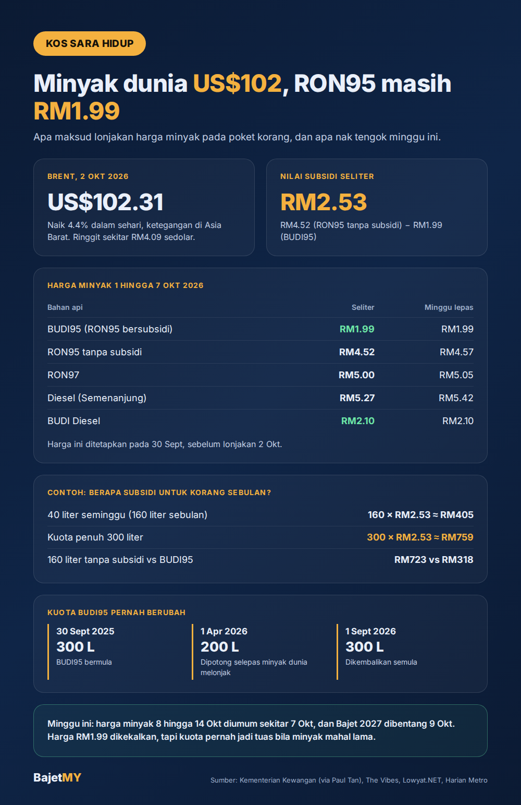

Pada 2 Oktober 2026, harga minyak mentah Brent melonjak 4.4% ke US$102.31 setong, didorong ketegangan di Asia Barat. Pada masa yang sama ringgit berada sekitar RM4.09 sedolar AS. Minyak dibeli dalam dolar, jadi dua-dua faktor ni menaikkan kos minyak untuk Malaysia.
Tapi kat stesen minyak, RON95 bersubsidi masih RM1.99 seliter. Jadi siapa yang tanggung bezanya, dan berapa nilainya untuk korang?

Harga minyak minggu ini (1 hingga 7 Oktober 2026)
Harga runcit diumumkan setiap minggu oleh Kementerian Kewangan melalui Mekanisme Harga Automatik (APM).
| Bahan api | Harga seliter | Minggu lepas |
|---|---|---|
| BUDI95 (RON95 bersubsidi) | RM1.99 | RM1.99 |
| RON95 tanpa subsidi | RM4.52 | RM4.57 |
| RON97 | RM5.00 | RM5.05 |
| Diesel (Semenanjung) | RM5.27 | RM5.42 |
| BUDI Diesel | RM2.10 | RM2.10 |
| SKPS (pengangkutan awam & logistik) | RM2.05 | RM2.05 |
Satu perkara penting: harga minggu ni ditetapkan pada 30 September, iaitu sebelum lonjakan harga minyak pada 2 Oktober. Harga tanpa subsidi untuk minggu depan (8 hingga 14 Oktober) dijangka diumumkan sekitar 7 Oktober, dan boleh naik kalau harga minyak dunia kekal tinggi.
Berapa nilai subsidi untuk korang?
Beza antara RON95 tanpa subsidi dan BUDI95 ialah:
RM4.52 − RM1.99 = RM2.53 setiap liter
Contoh senang:
- Kereta yang guna 40 liter seminggu (lebih kurang 160 liter sebulan): 160 × RM2.53 = lebih kurang RM405 sebulan yang ditanggung subsidi.
- Kalau guna kuota penuh 300 liter: 300 × RM2.53 = lebih kurang RM759 sebulan.
Tanpa subsidi, 160 liter sebulan akan kos 160 × RM4.52 = RM723, berbanding 160 × RM1.99 = RM318 dengan BUDI95.
Kalau korang nak kira kos minyak kereta sendiri, cuba Kalkulator Kos Minyak.
Siapa layak BUDI95?
BUDI95 bermula pada 30 September 2025. Rakyat Malaysia yang ada lesen memandu sah layak membeli RON95 pada RM1.99 seliter, sehingga kuota bulanan. Pengguna BUDI95 dilaporkan sekitar 16 juta orang.
Yang bayar harga penuh (RM4.52): bukan warganegara, dan sesiapa yang sudah habis guna kuota bulanan.
Kuota pernah dipotong
Ini bahagian yang ramai dah lupa:
| Tarikh | Kuota BUDI95 sebulan |
|---|---|
| 30 September 2025 (BUDI95 bermula) | 300 liter |
| 1 April 2026 | Dipotong ke 200 liter, selepas harga minyak dunia melonjak akibat perang di Asia Barat |
| 1 September 2026 | Dikembalikan ke 300 liter (BUDI Diesel juga 300 liter, sehingga 400 liter untuk pikap dan jip yang layak) |
Maksudnya, harga RM1.99 dikekalkan, tapi kuota ialah tuas yang kerajaan pernah guna bila kos subsidi meningkat.
Tbf: subsidi tu sebenarnya duit siapa?
Subsidi BUDI95 memang melindungi pemandu biasa yang guna dalam kuota. Kebanyakan orang tak akan rasa harga RM4.52 selagi tak lebih kuota.
Tapi subsidi dibayar daripada duit kerajaan, iaitu hasil cukai dan pendapatan negara, termasuk daripada minyak. Bila harga minyak tinggi untuk tempoh yang lama, kos subsidi naik dan ruang untuk perbelanjaan lain jadi lebih sempit. Itu sebab isu subsidi minyak hampir selalu muncul dalam setiap bajet.
Dan walaupun harga di pam tak berubah, ringgit yang lemah dan minyak dunia yang mahal tetap boleh menaikkan kos barang import dan pengangkutan secara perlahan.
Apa yang perlu diperhatikan minggu ini
- Sekitar 7 Oktober: pengumuman harga minyak mingguan untuk 8 hingga 14 Oktober.
- 9 Oktober: Bajet 2027 dibentangkan. Perhatikan apa-apa perubahan pada subsidi bahan api, BUDI95 atau kuota.
Apa yang boleh korang buat sekarang
- Pantau baki kuota setiap bulan, terutama kalau kerja jauh atau guna kereta untuk e-hailing atau penghantaran.
- Bajet minyak pada harga sebenar, bukan anggaran kasar. Kira guna liter sebulan, bukan "isi RM50 sekali".
- Jangan percaya mesej tular tentang harga baharu sebelum pengumuman rasmi Kementerian Kewangan.
Ringkasan
Harga minyak dunia naik ke US$102 setong, tapi BUDI95 kekal RM1.99 dengan kuota 300 liter. Subsidi bernilai RM2.53 setiap liter, iaitu lebih kurang RM405 sebulan untuk pemandu yang guna 160 liter. Harga dikekalkan, tapi sejarah menunjukkan kuota boleh diketatkan bila minyak mahal lama. Minggu ni, tengok pengumuman harga sekitar 7 Oktober dan Bajet 2027 pada 9 Oktober.
Sumber
- Kementerian Kewangan: harga runcit bahan api 1 hingga 7 Oktober 2026 (dilaporkan oleh Paul Tan, 30 September 2026)
- The Vibes: harga Brent US$102.31 dan ringgit RM4.088, 2 Oktober 2026
- Lowyat.NET dan Paul Tan: kuota BUDI95 dikembalikan ke 300 liter mulai 1 September 2026
- Harian Metro: kuota BUDI95 dikembalikan ke 300 liter sebulan